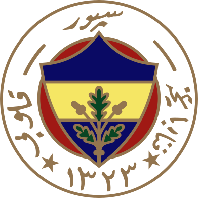
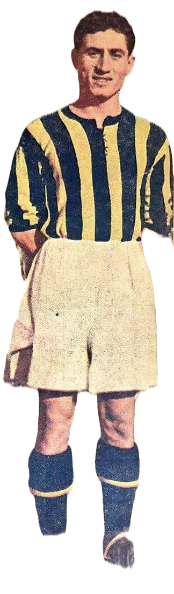
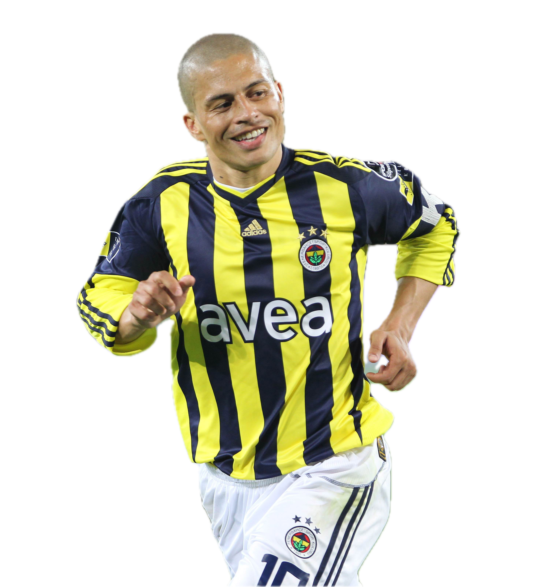
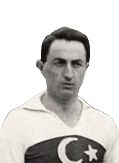
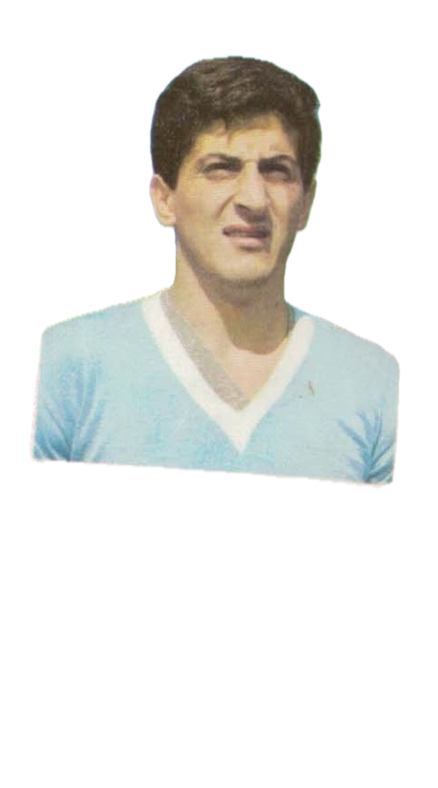
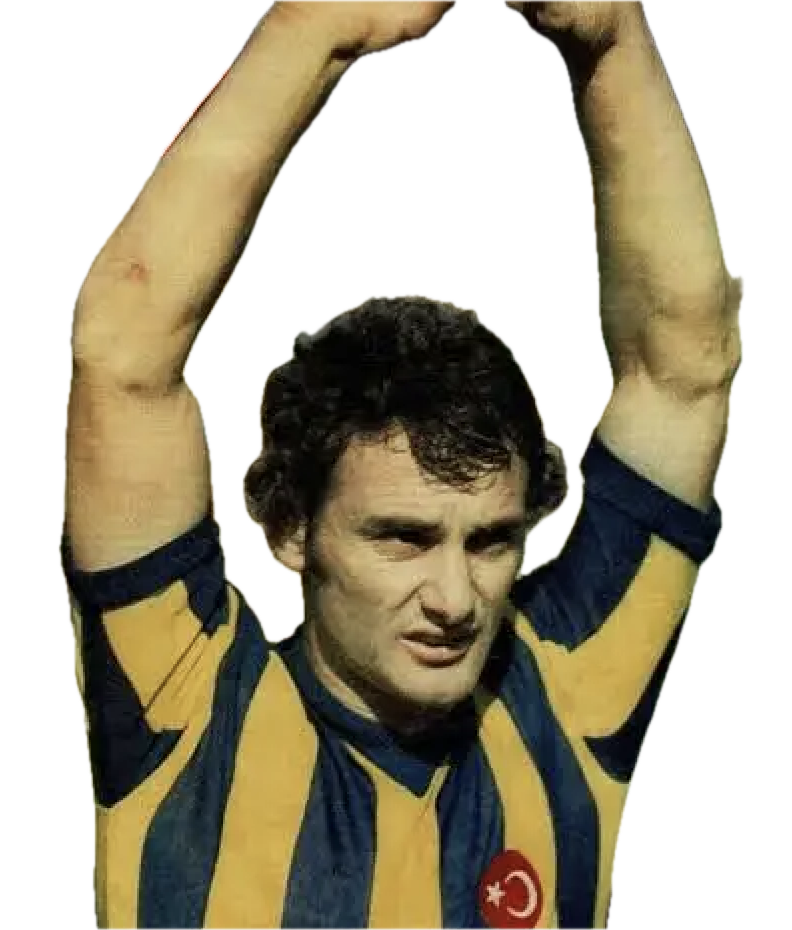
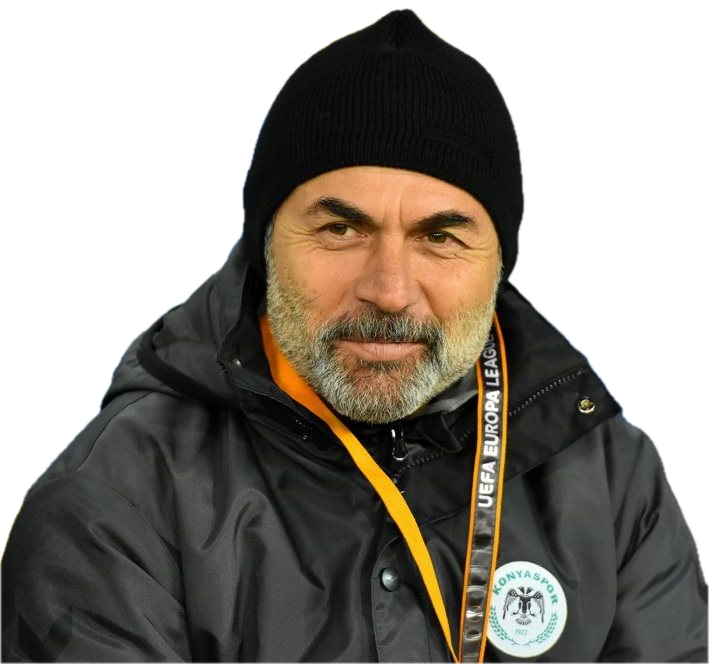
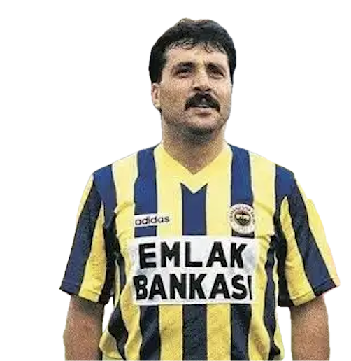
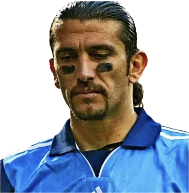

1907
Fenerbahçe Spor Kulübü Kadıköy'de kuruldu.
Yeni yasayla kulüp resmen tescil edildi.
İstanbul Ligi'nde hiç yenilmeden ilk şampiyonluk.
Mustafa Kemal Atatürk kulübü ziyaret etti.
Şükrü Saracoğlu kulüp başkanlığı yaptı.
İlk Türkiye ulusal ligi şampiyonu Fenerbahçe oldu.

Balkan Kupası: Türk kulüplerinin ilk uluslararası kupası.
Stadyum, Şükrü Saracoğlu adını aldı.
Stadyum yeniden inşa edildi.
Şampiyonlar Ligi'nde çeyrek final.

Avrupa Ligi'nde yarı final.

1916-1934
352 maçta 470 gol: kulübün tüm zamanların en golcü ismi.
1947-1951, 1953-1964
615 maçta 423 gol. Avrupa'da oynayan ilk Türk futbolcularından.

1955-1961, 1967-1970
372 maçta 181 gol. Futbola Fenerbahçe'de başladı ve burada bıraktı.

1972-1981
1970'lerin şampiyonluk yıllarında üç kez gol kralı oldu.

1988-1996
1988-89'da 29 golle bir sezonda en çok gol rekorunu elde etti.

1979-1996
Kariyerini tamamen Fenerbahçe'de geçirdi, en çok forma giyen oyuncu.

1994-2003, 2004-2007
2002 Dünya Kupası'nda turnuvanın en iyi kadrosuna seçildi.
2004-2013
Kulübün simgesi, Fenerbahçe'nin en çok gol atan yabancı oyuncusu.
2026-27 sezonu